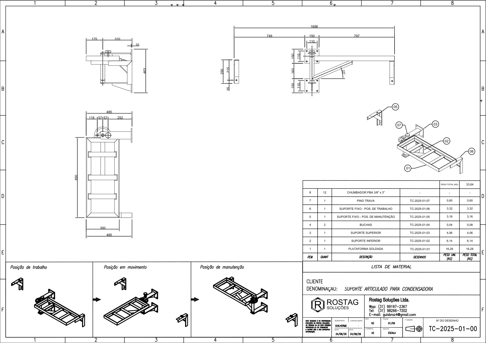
TC-2025-01-00Rev. 02 · A2
Conjunto geral
Montagem, cotas de instalação, as três posições (trabalho, em movimento e manutenção) e a lista de material. Peso total 33,64 kg.
Plataforma em cantoneira que gira 180° num pivô central. Em trabalho, fica afastada da janela. Para limpar ou consertar, chega até a mão de quem está do lado de dentro.
Toque em cada passo para ver no modelo. A plataforma gira pelo lado de fora, longe da parede, e só fica livre com a trava aberta. Nas duas posições a ponta assenta numa mão francesa.
O vento vira força pela NBR 6123. Arraste a velocidade para ver como cada número da cadeia muda. O projeto usa 140 km/h, valor definido pelo cliente.
547 N é o peso de uns 56 kg empurrando a condensadora de lado. Por isso a trava e a fixação são dimensionadas pelo vento, não pelo peso.
Cada caso foi simulado no Autodesk Inventor por elementos finitos (T1 a T4) ou calculado à mão (T5). A posição de manutenção (M) é o espelho da de trabalho. Setas azuis são as cargas; na parede, vermelho é o que puxa o chumbador e azul-acinzentado o que empurra.
meta FS = 2,0 sobre o escoamento do aço (250 MPa no ASTM A36)
Contas feitas com fórmulas clássicas de resistência dos materiais, para conferir o modelo de elementos finitos e cobrir o giro, quando a ponta fica sem apoio.
Força no chumbador mais carregado de cada apoio, a partir das reações da simulação. Considera giro da placa na borda, o que é conservador.
| Apoio | T2 | T3 | T4 | T5 giro |
|---|---|---|---|---|
| Placa superior 4 × PBA 3/8" | 6 / 1 | 35 / 4 | 6 / 1 | 23 / 0 |
| Placa inferior 4 × PBA 3/8" | 7 / 25 | 50 / 12 | 27 / 18 | 71 / 15 |
| Mão francesa 2 × PBA 3/8" | 77 / 13 | 112 / 28 | 99 / 21 | — sem apoio |
Valores em kgf: tração / corte por chumbador. Mão francesa com furos a 150 mm de distância.
Estrutura em aço ASTM A36, pino do pivô em SAE 1020 e buchas em nylon 6.6. Passe o mouse (ou toque) numa peça para destacá-la no modelo lá em cima.
Folhas em A2, 1º diedro, detalhadas no Inventor e no AutoCAD. Clique na folha para abrir o PDF em tamanho real.

Montagem, cotas de instalação, as três posições (trabalho, em movimento e manutenção) e a lista de material. Peso total 33,64 kg.
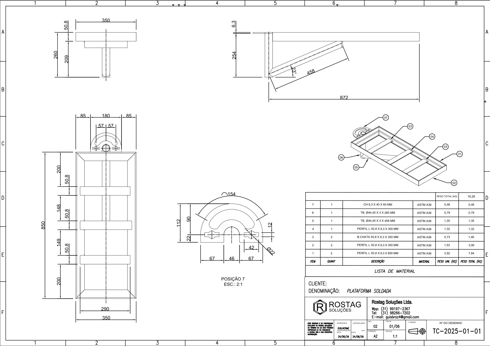
Quadro 850 × 350 em L 2" × 1/4", barras chatas, tubo do pivô Ø44,45 × 3, diagonal e placa de trava (detalhe 2:1). 16,28 kg.
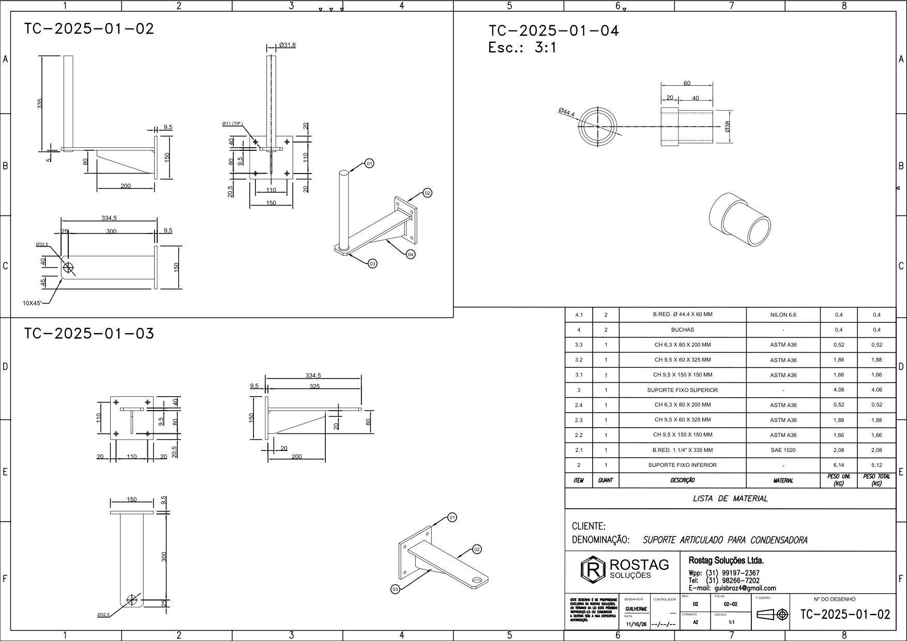
Suporte inferior com pino Ø1¼" soldado, suporte superior com furo do pino-trava e buchas de nylon 6.6 com colar (detalhe 3:1).
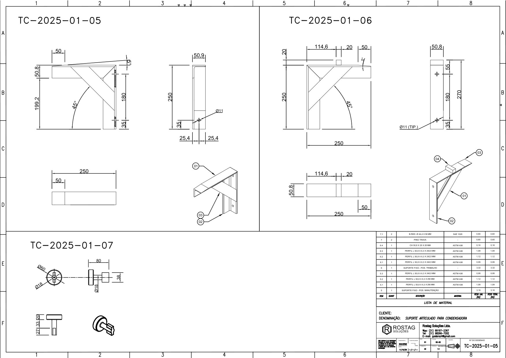
Mão francesa de trabalho e de manutenção em L 2" × 1/4" com reforço a 45°, e o pino-trava tipo baioneta Ø18.
O caso dimensionante é o T3, com o vento puxando a estrutura da parede: 91,8 MPa, deslocamento de 0,29 mm e cerca de 112 kgf no chumbador superior da mão francesa. As revisões do projeto levaram o FS desse caso de 0,61 para 2,72.
Verificação da estrutura soldada, do pivô, da trava e da fixação na parede para uma condensadora de 30 kg sob vento de 140 km/h. Elementos finitos para os casos T1 a T4 e cálculo manual para o giro (T5).
Projeto e cálculo de minha autoria. Liberação final com ART de engenheiro habilitado.
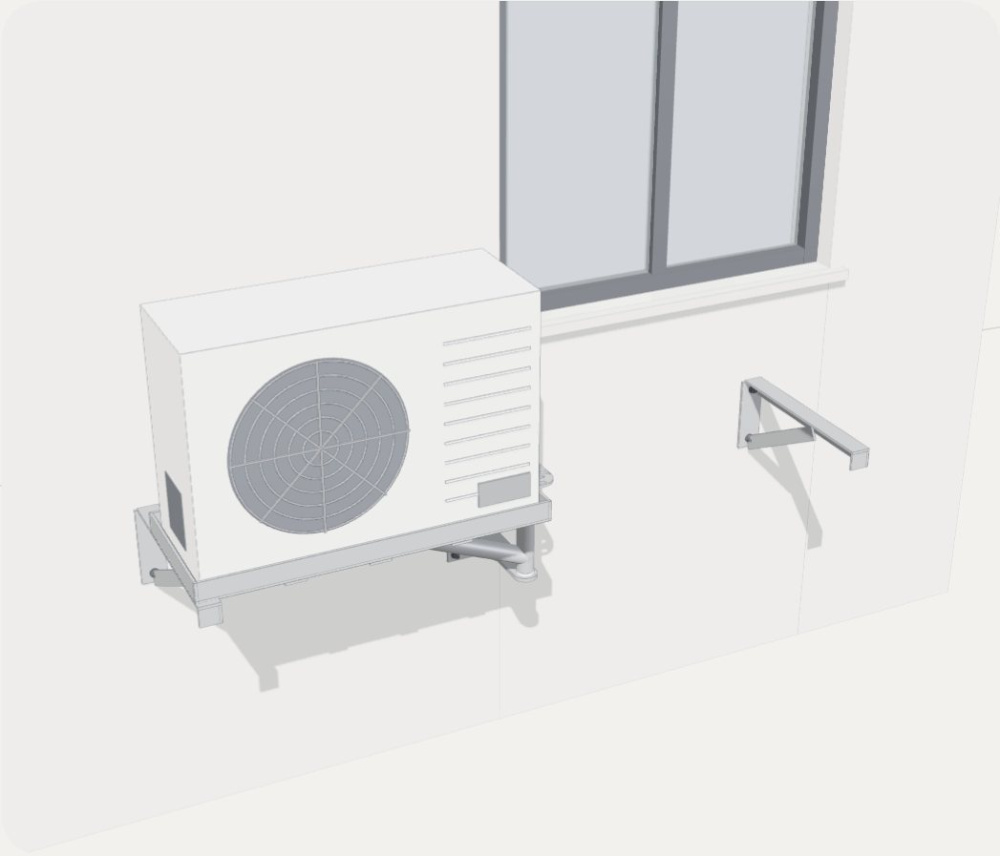
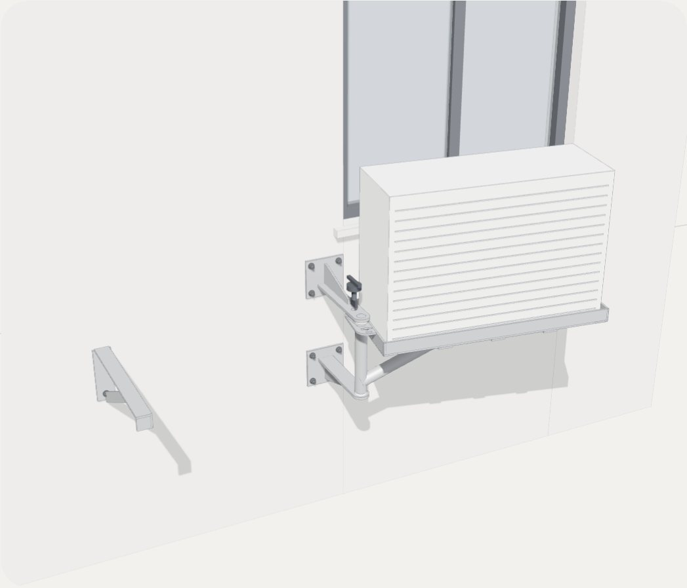
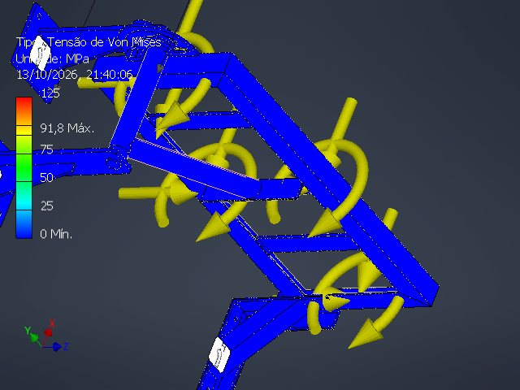
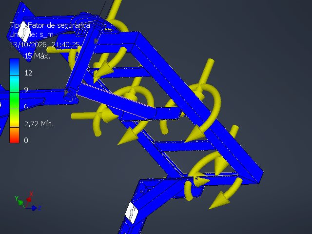
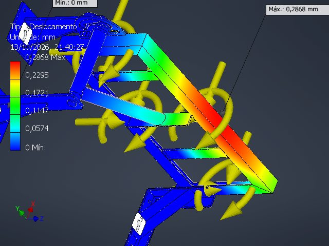
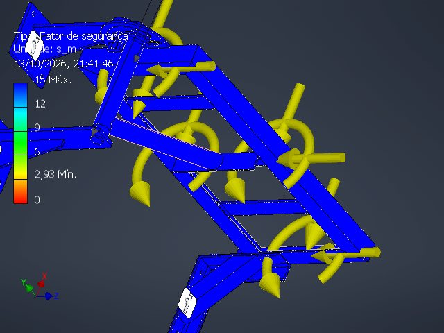
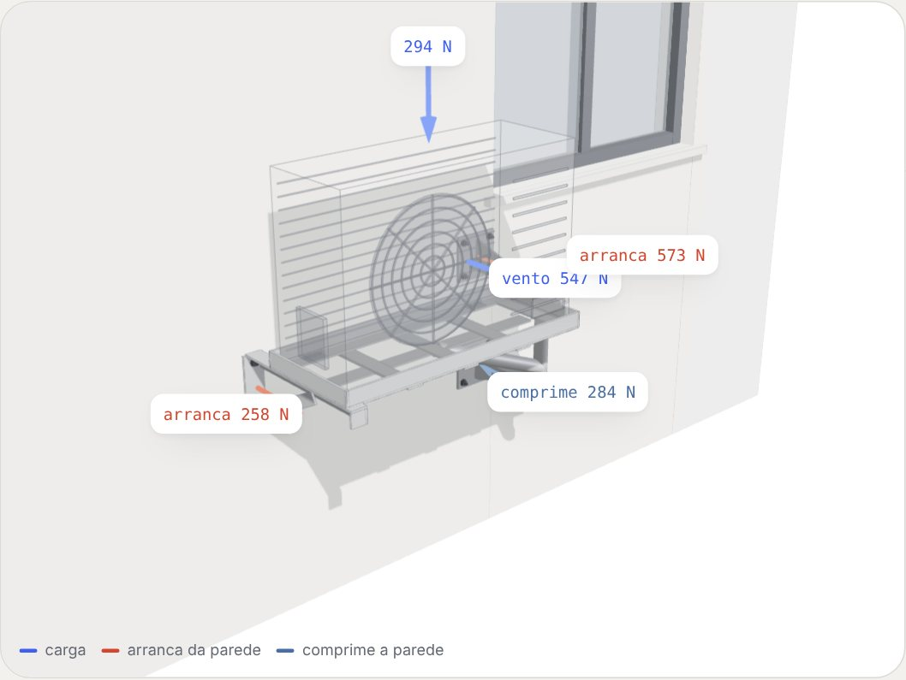